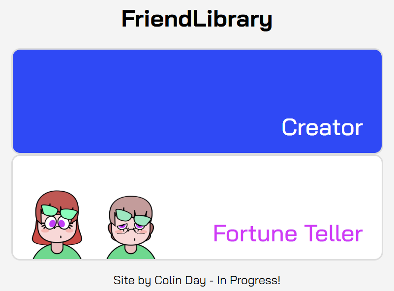
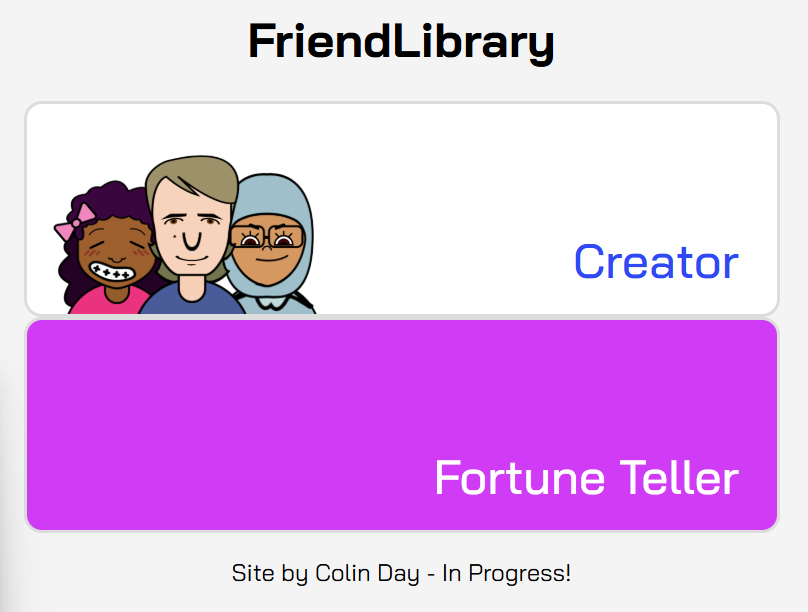
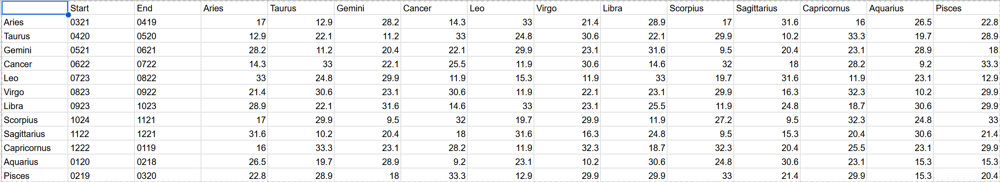
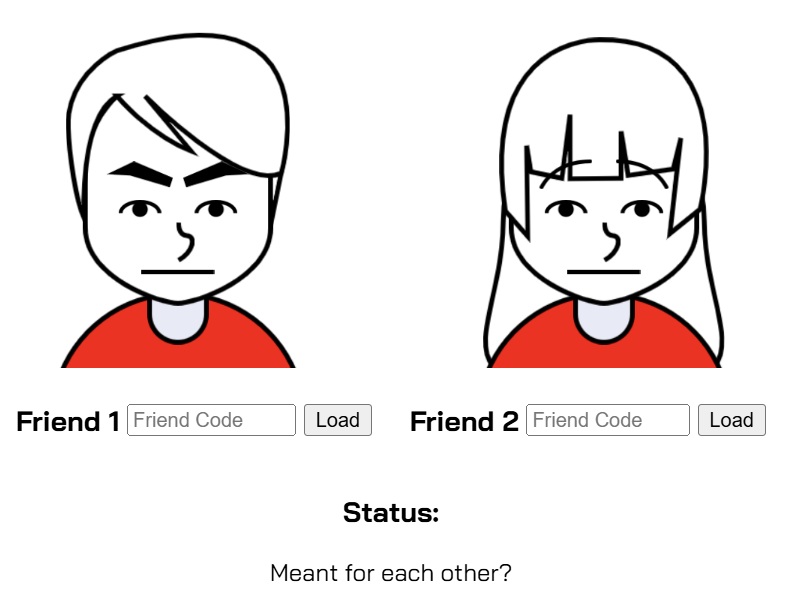

V2 Affinity Tester - 2.24.25

I knew from the very beginning of the project that I wanted to use the created friend characters to play with data, but I didn't want to just phone it in like this "Stats" concept from my brainstorming period.
Before I could properly get started on a much better compatability tester idea that I had in mind for this project from the inception of the project, I needed to update the rest of the website to ensure it could scale to accommodate ideas that went beyond the creation of a single friend.
I needed to sort out 3 key aspects of my site before I could even think about creating this feature:
-
Index Page
The old index page was just the creator page, and considering my ambitions for the site had now outgrown a character creator, my first course of action was to make a new page to greet users visiting FriendLibrary.
This site takes heavy inspiration from the original concept behind Nintendo's Tomodachi Life series and the Mii characters in general, so I knew I wanted the "things" users do with their created Friends to things like compatability testers and horoscope readings. Like the original Japanese title of the aformentioned series implies, I want users to create a [Tomodachi] Collection of caricatures of the people they know, so features supporting this main concept needed to support the idea that by creating all of these codes, users are beginning their own "database" of sorts.
To that end, for a minute the first of these features I wanted to implement was the planned fortune teller that would show a Friend's projected luck in multiple areas throughout the upcoming week. I even implemented its icon, which featured a FriendLibrary sample character in both young and old stages, and had it replace the Affinity Tester, which you can see by the shared magenta color scheme the two both have.
Speaking of the index icons, I had a lot of fun coding the CSS animations for the characters that pop up whenever you hover over the icon. I also wanted to make sure I could reuse the same properties for different icons with minimal code. The characters pop up at different rates depending on their tag, with the middle showing in front and going up the highest. I designed the characters to not look too much like any specific person in my life, but instead as the perfect representitives for the different kind of people you can depict with my intentionally limited tools. You can even find a few of these on the Samples page. Of course, these are just close recreations based on saved images because my other issue at this point was the lack of...
-
Working Codes
I had actually begun developing a code solution that was working fairly well before V1's last-minute refactor that de-centralized a lot of the logic powering the friend creator, but when reimplementing the logic, I decided to start from scratch. Instead of creating the code within the creator's javascript file, I decided to give the logic to the friend's class, so that anywhere the friend was, it could be copied. Because I had designed the class as a dictionary of attributes anyway, automating the encoding process was relatively painless, though there were several hiccups the more I tried to shrink the code.
I knew I wanted to represent the floating-point values in a different base than 10 to truncate the characters used, but it took a surprising amount of research online to come to the simple realization that the best way to standardize the character length of each value with my current parameters was to do a bit of multiplication to convert each float into Base36 with two digit places. After this I had some issues with the way colors loaded and rotation worked, but these were solved with minimal issue. After getting a good foundation in to save and load characters, (Finally!) I knew there was one more step before I could play with them...
-
Getting the Data
Remember that aforementioned luck calendar idea from earlier? A big part of the reason it was put on the backburner was my struggles during this stage of the process. I originally wanted to get a bunch of detailed information from an astrology API so users could read horoscopes without much work on my end, but most of my options were a lot more limited than they originally looked without spending a lot more money than I was willing to at this stage in the process. I also briefly considered using an actual scientific NASA API that tracked the positions of the planets before realizing that was a massive overscope for the amount of time I had on the project with the other things I needed to do to get it working. So like any good astrologist I decided to half-make some stuff up. Pulling up multiple sources on Zodiac and Numerology compatability, I put together a chart that I would later pull data from for the Affinity Tester.
While the Numerology chart had some more creative liberties, especially because I wanted to compare the other numbers to 0, which doesn't seem to be all that recognized, the Zodiac chart was created with a bit more care. It also served multiple purposes as a source of data, binding the birthdays of friends to star signs alongside comparing their compatability with others. Both of these charts represent 34 points of the overall friend affinity level, with a gap in age accounting for the other 32, because age is an incredibly important factor in one's ability to get along, especially romantically.
With all this data in hand I could get to work on the page itself. I once again had to fudge with the code in my FriendRenderer class responsible for drawing the characters to the canvas, and I don't see this being the last time if I ever want to scale up the project again unfortunetly. In this case I had to once and for all ensure that the FriendRenderer could be moved around the canvas and sized in at least slightly differing ways than before, but eventually I had two characters side by side on the same canvas, which was an exciting start.
The friend code loading was actually partially developed in sync with this part, because some of the strategies I had for rendering friends meant showing two at a time was impossible without strangeness. I wish I had taken a few screenshots of the wild scaling and placement errors these guys initially had.
After this was the development of the bars and heart to represent the compatability, which was fairly boring to implement. I mostly followed the method shown on W3 Schools and peeked around the net for things like smooth animation, though the CSS work I had done on the index page certainly helped with this step. The heart drawn on the canvas actually shares a lot more logic with the bars drawn by html than I had initially imagined they would which was a pleasent surprise.
Final Edits
I got some feedback on the editor by testers of the Affinity Tester, so I used my devtime to slightly polish some of the assets and scaling on mobile. It wasn't much more than rounding out the buttons and changing up some unpleasent colors in the former's case but the latter step took a lot of trial and error without a quick way for me to test true mobile layout on PC at the time. Even though at the time of writing this website stores no data, so privacy is not much of a concern, a tester rightfully pointed out that asking for names and birthdays felt a bit suspicious, which I unfortunetly had to agree with. To compromise a bit on my vision for now, I changed the "Name" option in the Creator to "Nickname", to make it more clear that this is a site that is meant to design caricatures of friends first and foremost, not harvest data. Future adjustments to the site will likely further this goal.